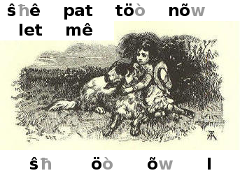
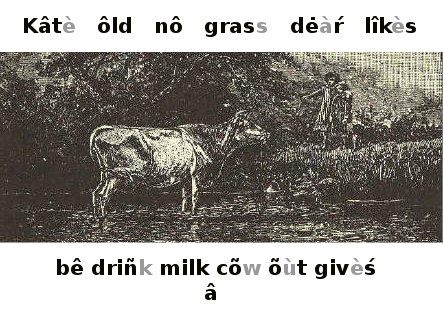
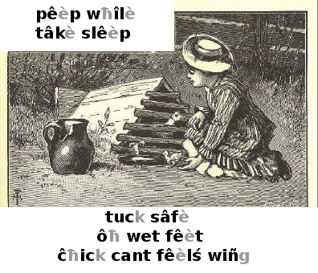

Mcguffey*'s Fìŕst Ėclectic Rêàdèŕ, Rėvîśèd Ėdiţìòn, bŷ Willĩám Hôlmèś Mcguffey*
Tîtlè: Mcguffey*'s Fìŕst Ėclectic Rêàdèŕ, Rėvîśèd Ėdiţìòn
Åùπħòŕ: Willĩám Hôlmèś Mcguffey*
Lañgυáĝè: Ėñgliŝħ
Transcrîbèd bŷ Don Kostuch*
Transcrîbèŕ's Nôtès:
Welcómè tö τħé scħöòlröòm ofuv 1900. Τħé mørál tônè iś plâìn. "Ŝħê iś kînd tö τħé ôld blînd man."
Τħé exèŕçîśėś ārè still süìtáblè, and pèŕhaps mørè helpful τħan sőmè cóntempòŕãrý åltèŕnátivèś. Muĉħ iś left tö τħé têàĉħèŕ. Explánâţìònś givén in τħé text ārè enoughinuf tö get stārtėd têàĉħiñg a ĉħîld tö and wrîtè. Cõùntiñg in Rômán nümerálś iś inclüdėd aś a bônus in τħé førm ofuv lessón numbèŕś.
Êàĉħ lessón bėginś wiτħ vôcabûlãrý wòŕdś, follôwèd bŷ τħé dėscripţìòn ofuv a picťùŕè (if ãný) rėlâtėd tö τħé lessón's rêàdiñg exèŕçîśè. Τħé lessón τħen cónsists ofuv printėd text før rêàdiñg and sőmètîmèś script (handwrîtiñg) før rêàdiñg ør copýiñg.
Don Kostuch*
MCGUFFEY*'S
Fìŕst
Rėvîśèd Ėdiţìòn
Mcguffey* Ėdiţìòn and Colophon* ārè Trâdèmārks ofuv
JOĦN WÎLÊY & SŐNŚ, IÑC.
NËW YØRK - ĈĦIĈĦESTÈŔ - WEINHEIM* - BRIŚBÂNÈ - SIÑGÁPØRÈ - TORONTO*
Τħis Fìŕst Rêàdèŕ mây bê ûśèd in têàĉħiñg rêàdiñg bŷ ãný ofuv τħé meπħódś in commón ; but it iś éspećiállý ádaptėd tö τħé Þħonic Meπħód, τħé Wòŕd Meπħód, ør a combínâţìòn ofuv τħé twö.
Î. Þħonic Meπħód.—Fìŕst têàĉħ τħé elémentàŕý sõùndś and τħeìŕ reprėśentátivè, τħé lettèŕś mārkèð wiτħ diacriticals*, aś τħey óccùŕ in τħé lessónś; τħen, τħé førmâţìòn ofuv wòŕdś bŷ τħé combínâţìòn ofuv τħêśè sõùndś. Før instánçè, têàĉħ τħé pûpíl tö îdentífŷ τħé cħaráctèŕś a, ô, n*, d*, g*, r*, and th*, in Lessón Î, aś τħé reprėśentátivèś ofuv çèŕtáìn elémentàŕý sõùndś; τħen têàĉħ him tö førm τħé wòŕdś at τħé heàd ofuv τħé lessón, τħen őτħèŕ wòŕdś, aś nag, on, and, etc*. Pùŕsüè a simílàŕ cøùŕsè in têàĉħiñg τħé sucçêèdiñg lessónś. Haviñg a fëw lessónś in τħis mannèŕ, bėgin tö têàĉħ τħé nâmèś ofuv τħé lettèŕś and τħé spelliñg ofuv wòŕdś, and rėqυîŕè τħé gröùps, "a man," "τħé man," "a pen," tö bê aś a gōòd rêàdèŕ wōùld prónõùnçè siñglè wòŕdś.
II*. Wħen onewun ofuv τħé lettèŕś in τħé combínâţìònś öù ør õw, iś mārkèð in τħé wòŕdś at τħé heàd ofuv τħé rêàdiñg exèŕçîśėś, τħé őτħèŕ iś sîlént. If nêìτħèŕ iś mārkèð, τħé twö lettèŕś reprėśent a diphthong*. Åll őτħèŕ unmārkèð võwélś in τħé vocabularies*, wħen in combínâţìòn, ārè sîlént lettèŕś. In slâtè ør blackbøàŕd wòŕk, τħé sîlént lettèŕś mây bê cançélèd.
III*. Wòŕd Meπħód.—Têàĉħ τħé pûpíl tö îdentífŷ at sîgħt τħé wòŕdś plâçèð at τħé heàd ofuv τħé rêàdiñg exèŕçîśėś, and tö τħêśè exèŕçîśėś wiτħõùt heśítâţìòn. Haviñg a fëw lessónś, bėgin tö têàĉħ τħé nâmèś ofuv τħé lettèŕś and τħé spelliñg ofuv wòŕdś.
IV*. Wòŕd Meπħód and Þħonic Meπħód Cómbînèd.—Têàĉħ τħé pûpíl tö îdentífŷ wòŕdś and senténçėś, aś ábóvè. Haviñg a fëw lessónś in τħis mannèŕ, bėgin tö τħé Þħonic Meπħód, cómbîniñg it wiτħ τħé Wòŕd Meπħód, bŷ fìŕst têàĉħiñg τħé wòŕdś in êàĉħ lessón aś wòŕdś; τħen τħé elémentàŕý sõùndś, τħé nâmèś ofuv τħé lettèŕś, and spelliñg.
V*. Têàĉħ τħé pûpíl tö script lettèŕś in wrîtiñg, wħen têàĉħiñg τħé nâmèś ofuv τħé lettèŕś and τħé spelliñg ofuv wòŕdś.
Copýrîgħt, 1879, bŷ Van Antwèŕp, Bragg & Cô.
Copýrîgħt, 1896, bŷ Ámerícán Bōòk Cőmpáný.
Copýrîgħt, 1907 and 1920, bŷ H*.H*. Vâìl.
Prefáçè
In prėśentiñg Mcguffeys* Rėvîśèd Fìŕst Rêàdèŕ tö τħé public, áttenţìòn iś invîtėd tö τħé follôwiñg fêàťùŕèś:
1. Wòŕdś ofuv ônlý twö ør πħrêè lettèŕś ārè ûśèd in τħé fìŕst lessónś. Loñgèŕ and mørè diffícult oneswunz ārè graδüállý intródüçèð aś τħé pûpíl gâìnś aptness* in τħé mastérý ofuv wòŕdś.
2. A propèŕ grâdâţìòn haś bėèn cãŕèfullý prėśèŕvèd. Åll nëw wòŕdś ārè plâçèð at τħé heàd ofuv êàĉħ lessón, tö bê lèàŕnèd bėførè τħé lessón iś . Τħeìŕ numbèŕ in τħé èàŕlý lessónś iś verý småll, τħus mâkiñg τħé fìŕst steps êàśý. Åll wòŕdś in τħêśè vocabularies* ārè ûśèd in τħé text immêdïátèlý follôwiñg.
3. Cãŕèfullý ėñgrâvèd script exèŕçîśėś ārè intródüçèð før a dòublè pùŕpósè. Τħêśè ŝħōùld bê ûśèd tö têàĉħ τħé rêàdiñg ofuv script; and mây ålsô sèŕvè aś copïèś in slâtè wòŕk.
4. Τħé illustrâţìònś havè bėèn dėśîgnèd and ėñgrâvèd spećìàllý før τħé lessónś in wħiĉħ τħey óccùŕ. Mãný ofuv τħé ėñgrâviñgś will sèŕvè admìŕáblý aś τħé bâsís før ørál lessónś in lañgυáĝè.
5. Τħé tŷpè iś lārĝè, stroñg, and distiñct.
Τħé credit før τħis rêviŝìón iś ålmôst whôllý düè tö τħé frìendś ofuv Mcguffeys* Rêàdèŕś,—emínént têàĉħèŕś and scħolàŕś, whö havè cóntribûtėd suĝĝesťìónś and critiçiśmś gâìnèd fróm τħeìŕ dâìlý wòŕk in τħé scħöòlröòm.
Çinçínnatï, Jünè, 1879.
(iii*)
A a N* n*
B* b* Ô ô
C* c* P* p*
D* d* Q* q*
Ê ê R* r*
F* f* S s
G* g* T* t*
H* h* Û û
Î î V* v*
J* j* W* w*
K* k* X* x*
L* l* Y* y*
M* m* Z* z*
Script Alþħábet
a b* c* d* ê f* g* h* î j* k* l* m* n* ô p* q* r* s t* û v* w* x* y* z*
1 2 3 4 5 6 7 8 9 0
Mcguffey*'s FÌŔST RÊÀDÈŔ.

Τħé dog.
Τħé dog ran.

Τħé cat. Τħé mat.
Iś τħé cat on τħé mat?
Τħé cat iś on τħé mat.

Τħé man. A pen.
Τħé man haś a pen.
Iś τħé pen in hiś hand?
It iś in hiś hand.

A fat hen. A big rat.
Τħé fat hen iś on τħé box.
Τħé rat ran fróm τħé box.
Can τħé hen run?

Sêè Rab! Sêè Ann!
Sêè! Rab haś τħé hat.
Can Ann catĉħ Rab?

Ann can catĉħ Rab.
Sêè! Ŝħê haś τħé hat.
Nõw Ann can pat Rab.
Let mê pat Rab, töò.
Ned haś fed τħé hen.
Ŝħê iś a black hen.
Ŝħê haś left τħé nest.
Sêè τħé eggś in τħé nest!
Will τħé hen let Ned get τħem?
Let mê get τħé black hat. Nõw Ned haś it on hiś heàd, and hê iś a big man.
Cőmè, Nat, sêè τħé big man wiτħ hiś black hat.
pat catĉħ haś left hat can
black eggś Rab Ann fed get
Ned iś on τħé box. Hê haś a pen in hiś hand. A big rat iś in τħé box.
Can τħé dog catĉħ τħé rat?
Cőmè wiτħ mê, Ann, and sêè τħé man wiτħ a black hat on hiś heàd.
Τħé fat hen haś left τħé nest. Run, Nat, and get τħé eggś.

Τħé cat ran. Ann ran.
Τħé man haś a hat.

Dö yöù sêè Nell?
Yes; ŝħê haś a pan wiτħ sőmè eggś in it.
Let mê havè τħé pan and τħé eggś, will yöù, Nell?
Haś τħé black hen left τħé nest?
Î will nõw run tö catĉħ Rab. Will yöù run, töò?
Ô Ben! let mê get in, will yöù?
Yes, if yöù will sit still.
Stand still, Jip*, and let Ann get in.
Nõw, Ben, hand mê τħé wħip.
Get up, Jip*!
1,2.

Kittý haś a nîçè pet. It can siñg a swêèt soñg.
Ŝħê haś just fed it.
Ŝħê will nõw pūt it in τħé câĝè, and hañg τħé câĝè up. Τħen τħé cat can not catĉħ it.

Lōòk at Tom and hiś dog. Τħé dog haś a black spot on hiś back. Dö yöù πħiñk hê iś a gōòd dog?
Tom haś a big top, töò. It iś on τħé box wiτħ Kittý's doll.

Τħé sun iś up. Τħé man haś fed τħé black hen and τħé fat duck.
Nõw τħé duck will swim in τħé pond. Τħé hen haś run tö hèŕ nest.
Let us not stop at τħé pond nõw, før it iś hot.
Sêè hõw still it iś! Wê will gô tö sêè Tom and hiś top.
Joħn rock set jump fun must
mây undèŕ skip bañk but tòuĉħ
Ô Joħn! τħé sun haś just set. It iś not hot, nõw.
Let us run and jump. Î πħiñk it iś fun tö run, and skip, and jump.
Sêè τħé duck on τħé pond! Hèŕ nest iś up on τħé bañk, undèŕ τħé rock.
Wê must not tòuĉħ τħé nest, but wê mây lōòk at it
Τħé sun haś set, and τħé pond iś still.
Joħn, Ned, Ben, Tom, and Nell stand on τħé bañk, and lōòk at τħé duck.
Τħé dog wiτħ a black spot on hiś back, iś wiτħ Tom. Sêè! Tom haś hiś hat in hiś hand. Hê haś left hiś big top on τħé box.
Kittý's doll iś on τħé rock. Nell haś pūt hèŕ pet in τħé câĝè. It will siñg a swêèt soñg. Τħé duck haś hèŕ nest undèŕ τħé rock.
It iś not hot nõw. Let us run, and skip, and jump on τħé bañk. Dö yöù not πħiñk it iś fun?
ārè iñk møss τħis tub up set a

Τħé pen and τħé iñk ārè on τħé stand. Iś τħis a gōòd pen? Τħé møss iś on τħé rock. Τħis duck can swim. Ben upset τħé tub.
nut did ŝħut ŝħall lost fox
men met step intö hunt mud

Will τħé dog hunt a fox? Ben lost hiś hat. Ŝħall Î ŝħut τħé box? Î met him on τħé step. Did yöù jump intö τħé mud? Î havè a nut. Î met τħé man.

Ô Kâtè! τħé ôld cõw iś in τħé pond: sêè hèŕ driñk! Will ŝħê not cőmè õùt tö get sőmè grass?
Nô, Joħn, ŝħê lîkès tö bê in τħé pond. Sêè hõw still ŝħê standś!
Τħé dėàŕ ôld cõw givèś us swêèt milk tö driñk.

Pāpá, will yöù let mê rîdè wiτħ yöù on Prinçè? Î will sit still in yøùŕ ārmś.
Sêè, māmmá! Wê ārè bôπħ on Prinçè. Hõw lārĝè hê iś!
Get up, Prinçè! Yöù ārè not töò fat tö trot aś fār aś τħé bārn.
Ô Fanný, wħát a prėttý båll!
Yes; can yöù catĉħ it, Ann?
Tøss it tö mê, and sêè. Î will not let it fåll.
Τħat waswoś well dőnè
Nõw, Fanný, tøss it tö τħé top ofuv τħé wåll, if yöù can.

Did yöù cåll us, māmmá?
Î went wiτħ Tom tö τħé pond. Î had mŷ doll, and Tom had hiś flag.
Τħé fat duck swam tö τħé bañk, and wê fed hèŕ. Did yöù πħiñk wê mîgħt fåll intö τħé pond?
Wê did not gô töò nėàŕ, did wê, Tom?
Mây wê gô tö τħé swiñg, nõw, māmmá?

Hėŕè cőmèś τħé band! Ŝħall wê cåll māmmá and Fanný tö sêè it?
Let us stand still, and hėàŕ τħé men plây aś τħey pass.
Î hôpè τħey will stop hėŕè and plây før us.
Sêè τħé lārĝè man in frőnt ofuv τħé band, wiτħ hiś big hat. Wħát haś hê in hiś hand? Hõw fînè hê lōòks!
Lōòk, töò, at τħé man on τħat fînè hørsè.
If τħé men dö not stop, let us gô wiτħ τħem and sêè wħeŕè τħey gô.

Bess and Robèŕt ārè verý happý; pāpá and māmmá havè gonè tö τħé wōòdś wiτħ τħem.
Robèŕt haś a big tent and a flag, and Bess haś a littlè bed før hèŕ doll.
Jip* iś wiτħ τħem. Robèŕt will mâkè him dråw Bess and hèŕ doll in τħé cārt.

"Kâtè, will yöù plây wiτħ mê?" sãìd Jâmèś. "Wê will dig in τħé sand wiτħ τħis littlè spâdè. Τħat will bê fînè spørt."
"Not nõw Jâmèś" sãìd Kâtè; "før Î must mâkè mŷ doll's bed. Get Mãrý tö plây wiτħ yöù."
Jâmèś went tö get Mãrý tö plây wiτħ him. Τħen Kâtè mâdè τħé doll's bed.
Ŝħê sañg a soñg tö hèŕ doll, and τħé doll lây verý still in hèŕ lap.
Did τħé doll hėàŕ Kâtè siñg?
Kâtè haś left hèŕ doll in its littlè bed, and haś gonè tö plây wiτħ Mãrý and Jâmèś. Τħey ārè åll in τħé ŝħâdè, nõw, bŷ τħé brōòk.
Jâmèś digś in τħé soft sand wiτħ hiś spâdè, and Mãrý picks up littlè stônèś and pūts τħem in hèŕ lap.
Jâmèś and Mãrý ārè glad tö sêè Kâtè. Ŝħê will help τħem pick up stônèś and dig, bŷ τħé littlè brōòk.
1,3.
"Wħát ŝħall wê dö?" sãìd Fanný tö Joħn. "Î dö not lîkè tö sit still. Ŝħall wê hunt før eggś in τħé bārn?"
"Nô" sãìd Joħn; "Î lîkè tö plây on τħé grass. Will not pāpá let us catĉħ
Prinçè, and gô tö τħé big wōòdś?"
"Wê can pūt τħé tent in τħé cārt, and gô tö sőmè nîçè spot wħeŕè τħé grass iś soft and swêèt."
"Τħat will bê fînè," sãìd Fanný. "Î will get mŷ doll, and givè hèŕ a rîdè wiτħ us."
"Yes," sãìd Joħn, "and wê will get māmmá tö gô, töò. Ŝħê will hañg up a swiñg før us in τħé ŝħâdè."

Pêèp, pêèp! Wħeŕè havè yöù gonè, littlè ĉħick? Ārè yöù lost? Can't* yöù get back tö τħé hen?
Ôħ, hėŕè yöù ārè! Î will tâkè yöù back. Hėŕè, hen, tâkè τħis littlè ĉħick undèŕ yøùŕ wiñg.
Nõw, ĉħick, tuck yøùŕ littlè, wet fêèt undèŕ yöù, and gô tö slêèp før a wħîlè.
Pêèp, pêèp! Hõw sâfè τħé littlè ĉħick fêèlś nõw!

Τħis iś a fînè dây. Τħé sun ŝħînèś brîgħt. Τħeŕè iś a gōòd , and mŷ kîtè flîèś hîgħ. Î can just sêè it.
Τħé sun ŝħînèś in mŷ èŷèś; Î will stand in τħé ŝħâdè ofuv τħis hîgħ fençè.
Wħŷ, hėŕè cőmèś mŷ dog! Hê waswoś undèŕ τħé cārt. Did yöù sêè him τħeŕè?
Wħát a gōòd tîmè wê havè had! Ārè yöù not glad τħat wê did not gô tö τħé wōòdś wiτħ Joħn?
Τħé pond iś still. Hõw it ŝħînèś in τħé hot sun! Let us gô intö τħé wōòdś wħeŕè wê can sit in τħé ŝħâdè.
"Kâtè, Î wiŝħ wê had a bôàt tö pūt τħé dollś in. Don't* yöù?"
"Î knôw wħát wê can dö. Wê can get τħé littlè tub, and tîè a rôpè tö it, and drag it tö τħé pond. Τħis will flôàt wiτħ τħé dollś in it, and wê can get a pôlè tö pūŝħ it fróm τħé ŝħørè."
"Wħát a funný bôàt, Kâtè! A tub før a bôàt, and a pôlè før an øàŕ! Wőn't* it upset?"
"Wê can trŷ it, Nell, and sêè."
"Well yöù get τħé tub, and Î will get a pôlè and a rôpè. Wê will pūt bôπħ dollś in τħé tub, and givè τħem a rîdè."

Τħé dollś had a nîçè rîdè tö τħé pond. A soft mâdè τħé tub flôàt õùt. Nell let τħé pôlè fåll on τħé tub, and upset it.

"Hėŕè, Pontô! Hėŕè, Pontô!" Kâtè cållèd tö hèŕ dog. "Cőmè, and get τħé dollś õùt ofuv τħé pond."
Rôśè went undèŕ, but ŝħê did not drõwn. Bess waswoś still on τħé top ofuv τħé wåtèŕ.
Pontô câmè wiτħ a bõùnd, and jumpèð intö τħé pond. Hê swam árõùnd, and got
Bess in hiś mõùπħ, and brøùgħt hèŕ tö τħé ŝħørè.
Pontô τħen fõùnd Rôśè, and brøùgħt hèŕ õùt, töò.
Kâtè sãìd, "Gōòd, ôld Pontô! Brâvè ôld dog!"
Wħát dö yöù πħiñk ofuv Pontô?
Jünè Lüçý's ãìŕ kînd trêèś siñgiñg blüè
wħen pûŕè sãyś (sez*) skŷ picnic û a

"Wħát a brîgħt Jünè dây! Τħé ãìŕ iś pûŕè. Τħé skŷ iś aś blüè aś it can bê.
Lüçý and hèŕ māmmá ārè in τħé wōòdś. Τħey havè fõùnd a nîçè spot, wħeŕè τħeŕè iś sőmè grass.
Τħey sit in τħé ŝħâdè ofuv τħé trêèś, and Lüçý iś siñgiñg.
Τħé trêèś ārè not lārĝè, but τħey mâkè a gōòd ŝħâdè.
Lüçý's kînd māmmá sãyś τħat τħey will havè a picnic wħen hèŕ pāpá can get a tent.
Jâmèś and Robèŕt havè gonè intö τħé ŝħâdè ofuv a hîgħ wåll tö plây båll.
Mãrý and Lüçý havè cőmè up fróm τħé pond nėàŕ bŷ, wiτħ brâvè ôld Pontô, tö sêè τħem plây.
Wħen τħey tøss τħé båll up in τħé ãìŕ, and trŷ tö catĉħ it, Pontô runś tö get it in hiś mõùπħ.
Nõw τħé båll iś lost. Τħey åll lōòk før it undèŕ τħé trêèś and in τħé grass; but τħey can not sêè it. Wħeŕè can it bê?
Sêè! Pontô haś fõùnd it. Hėŕè hê cőmèś wiτħ it. Hê will lây it at littlè
Lüçý's fêèt, ør pūt it in hèŕ hand.
bσy õùŕ spσìl hùŕ rāħ ôwn cσìl
nσìśè føùŕπħ suĉħ jσìn πħañk a bõùt
hσìst pây Jü ly* plâyiñg σì

"Pāpá, mây wê havè τħé big flag?" sãìd Jâmèś.
"Wħát can mŷ littlè bσy dö wiτħ suĉħ a big flag?"
"Hσìst it on õùŕ tent, pāpá. Wê ārè plâyiñg Føùŕπħ ofuv Jülŷ."
"Iś τħat wħát åll τħis nσìśè iś ábõùt? Wħŷ not hσìst yøùŕ ôwn flagś?"
"Ôħ! τħey ārè töò littlè."
"Yöù mîgħt spσìl mŷ flag."
"Τħen wê will åll jσìn tö pây før it. But wê will not spσìl it, pāpá."
"Tâkè it, τħen, and tâkè τħé cσìl ofuv rôpè wiτħ it."
"Ôħ! πħañk yöù. Hūrrāħ før τħé flag, bσyś!"
Kittý, mŷ prėttý, wħîtè kittý.
Wħŷ dö yöù scampèŕ áwây?
Î'vè finiŝħèð mŷ wòŕk and mŷ lessón
And nõw Î am reàdý før plây.
Cőmè, kittý, mŷ ôwn littlè kittý.
Î'vè sâvèd yöù sőmè milk cőmè and sêè.
Nõw driñk wħîlè Î pūt on mŷ bonnét,
And plây in τħé gārdén wiτħ mê.
Frañk haś a prėttý bôàt. It iś wħîtè, wiτħ a black lînè nėàŕ τħé wåtèŕ.
Hê kêèps it in τħé pond, nėàŕ hiś hômè. Hê ålwâyś tâkès gōòd cãŕè ofuv it.
Frañk haś bėèn at wòŕk in τħé gārdén, and will nõw a wħîlè.
muĉħ onewun (wun*) yet huñgrý
sêèn grandmā cørn wōùld ô
"Wħát iś τħat?" sãìd Lüçý, aś ŝħê câmè õùt on τħé steps. "Ôħ, it iś a littlè bôàt! Wħát a prėttý onewun it iś!"
"Î will givè it tö yöù wħen it iś finiŝħèð," sãìd Joħn, kîndlý. "Wōùld yöù lîkè tö havè it?"
"Yes, verý muĉħ, πħañk yöù, Joħn. Haś grandmā sêèn it?"
"Not yet; wê will tâkè it tö hèŕ bŷ and bŷ. Wħát havè yöù in yøùŕ pan,
Lüçý?"
"Sőmè cørn før mŷ henś, Joħn; τħey must bê verý huñgrý bŷ τħis tîmè."

Jâmèś haś bėèn tö mārkėt wiτħ hiś māmmá.
Ŝħê haś boughtbøt sőmè breàd, sőmè mêàt, and sőmè têà, wħiĉħ ārè in τħé baskét on hèŕ ārm.
Jâmèś iś trŷiñg tö tell hiś māmmá wħát hê haś sêèn in τħé mārkėt.
Sêè mŷ dėàŕ, ôld grandmā in hèŕ êàśý-ĉħãìŕ! Hõw grây hèŕ hãìŕ iś! Ŝħê weàŕś glassėś wħen ŝħê rêàdś.
Ŝħê iś ålwâyś kînd, and tâkès suĉħ gōòd cãŕè ofuv mê τħat Î lîkè tö dö wħát ŝħê tellś mê.
Wħen ŝħê sãyś, "Robèŕt, will yöù get mê a driñk?" Î run aś fast aś Î can tö get it før hèŕ. Τħen ŝħê sãyś, "Πħañk yöù, mŷ bσy."
Wōùld yöù not lővè a dėàŕ, gōòd grandmā, whö iś sô kînd? And wōùld yöù not dö åll yon cōùld tö plêàśè hèŕ?
dőèś wőndèŕ mőτħèŕ őτħèŕ bêè hónêy listén flõwèŕ
"Cőmè hėŕè, Lüçý, and listén! Wħát iś in τħis flõwèŕ?"
"Ô mőτħèŕ! it iś a bêè. Î wőndèŕ hõw it câmè tö bê ŝħut up in τħé flõwèŕ!"
"It went intö τħé flõwèŕ før sőmè hónêy, and it mây bê it went tö slêèp.
Τħen τħé flõwèŕ ŝħut it in.
"Τħé bêè lîkès hónêy aś well aś wê dö, but it dőèś not lîkè tö bê ŝħut up in τħé flõwèŕ.
"Ŝħall wê let it õùt, Lüçý?"
"Yes; τħen it can gô tö őτħèŕ flõwèŕś, and get hónêy."

Hėŕè cőmè Frañk and Jâmèś Wħîtè. Dö yöù knôw wħeŕè τħey ?
Frañk iś rîdiñg a hørsè, and Jâmèś iś drîviñg onewun hitĉħèð tö a cārt. Τħey ārè õùt verý èàŕlý in τħé dây. Hõw happý τħey ārè!
Sêè hõw well Frañk rîdèś, and hõw tîgħt Jâmèś hôldś τħé lînèś!
Τħé bσyś ŝħōùld bê kînd tö τħeìŕ hørsėś. It iś not best tö wħip τħem.
Wħen τħey havè dőnè rîdiñg, τħey will givè τħé hørsėś sőmè hây ør cørn.
Slâtè Wòŕk
Sőmè hørsėś can trot verý fast. Wōùld yöù lîkè tö rîdè fast? Onewun dây Î såw a dog hitĉħèð up a littlè cārt. Τħé cārt had sőmè cørn in it.

A littlè gìŕl went in sèàŕĉħ ofuv flõwèŕś før hèŕ mőτħèŕ. It waswoś èàŕlý in τħé dây, and τħé grass waswoś wet. Swêèt littlè bìŕdś wèŕè siñgiñg åll árõùnd hèŕ.
And wħát dö yöù πħiñk ŝħê fõùnd bėsîdèś flõwèŕś? A nest wiτħ yòuñg bìŕdś in it.
Wħîlè ŝħê waswoś lōòkiñg at τħem, ŝħê hèàŕd τħé mőτħèŕ bìŕd ĉħìŕp, aś if ŝħê sãìd, "Dö not tòuĉħ mŷ ĉħildrén, littlè gìŕl, før Î lővè τħem dėàŕlý."
Τħé littlè gìŕl nõw πħøùgħt hõw dėàŕlý hèŕ ôwn mőτħèŕ lővèd hèŕ.
Sô ŝħê left τħé bìŕdś. Τħen pickiñg sőmè flõwèŕś, ŝħê went hômè, and tôld hèŕ mőτħèŕ wħát ŝħê had sêèn and hèàŕd.
eigħt ask aftèŕ tõwn past āħ tickét
rîgħt hālf twö trâìn diñg lîgħtniñg

"Māmmá, will yöù gô tö tõwn?"
"Wħát dö yöù ask før a tickét on yøùŕ trâìn?"
"Ôħ! wê will givè yöù a tickét, māmmá."
"Ábõùt wħát tîmè will yöù get back? "
"At hālf past eigħt."
"Āħ! τħat iś aftèŕ bedtîmè. Iś τħis τħé fast trâìn?"
"Yes, τħis iś τħé lîgħtniñg trâìn."
"Ôħ! τħat iś töò fast før mê."
"Wħát ŝħall wê get før yöù in tõwn, māmmá?"
"A big baskét, wiτħ twö gōòd littlè ĉħildrén in it."
"Åll rîgħt! Tîmè iś up! Diñg, diñg!"

It iś nöòn, and τħé scħöòl iś õùt. Dö yöù sêè τħé ĉħildrén at plây? Sőmè run and jump, sőmè plây båll, and πħrêè littlè gìŕlś plây scħöòl undèŕ a trêè.
Wħát a big röòm før suĉħ a småll scħöòl!
Mãrý iś τħé têàĉħèŕ. Τħey åll havè bōòks in τħeìŕ handś, and Fanný iś rêàdiñg.
Τħey ārè åll gōòd gìŕlś, and wōùld not bê rüdè êvén in plâyiñg scħöòl.
Kâtè and Mãrý listén tö Fanný aś ŝħê rêàdś fróm hèŕ bōòk.
Wħát dö yöù πħiñk ŝħê iś rêàdiñg ábõùt? Î will tell yöù. It iś ábõùt a pōòr littlè bσy whö waswoś lost in τħé wōòdś.
Wħen Fanný haś finiŝħèð, τħé πħrêè gìŕlś will gô hômè.
In a littlè wħîlè, töò, τħé bσyś will givè up τħeìŕ plâyiñg.

Lüçý haś a nëw pet. Dö yöù knôw wħát kînd ofuv bìŕd it iś? Lüçý cållś hèŕ Pollý.
Pollý can sây, "Pōòr Pôll! Pōòr Pôll! Pollý wantswonts a crackèŕ;" and ŝħê can mew* lîkè a cat.
But Pollý and τħé cat ārè not gōòd frìendś. Onewun dây Pollý flëw dõwn, and lit upon τħé cat's back wħen ŝħê waswoś áslêèp.
Î πħiñk ŝħê knëw τħé cat wōùld not lîkè τħat, and ŝħê did it tö têàśè hèŕ.
Wħen Lüçý pets τħé cat, Pollý flîèś up intö τħé ôld applè trêè, and will not cőmè wħen ŝħê cållś hèŕ. Τħen Lüçý sãyś, "Wħát a sillý bìŕd!"
"Well, ĉħildrén, did yöù havè a nîçè tîmè in τħé wōòdś?"
"Ôħ yes, mőτħèŕ, suĉħ a gōòd tîmè! Sêè wħát swêèt flõwèŕś wê fõùnd, and wħát soft møss. Τħé best flõwèŕś ārè før grandmā. Wőn't* τħey plêàśè hèŕ?"
"Yes; and it will plêàśè grandmā tö knôw τħat yöù πħøùgħt ofuv hèŕ."
"Rab waswoś suĉħ a gōòd dog, mőτħèŕ.
Wê left him undèŕ τħé big trêè bŷ τħé brōòk, tö tâkè cãŕè ofuv τħé dollś and τħé baskét.
"Wħen wê câmè back, τħey wèŕè åll sâfè. Nô onewun cōùld get τħem wħîlè Rab waswoś τħeŕè. Wê gâvè him sőmè ofuv τħé crackèŕś fróm τħé baskét.
"Ô mőτħèŕ, hõw τħé bìŕdś did siñg in τħé wōòdś!
"Fanný sãìd ŝħê wōùld lîkè tö bê a bìŕd, and havè a nest in a trêè. But Î πħiñk ŝħê wōùld wantwont tö cőmè hômè tö slêèp."
"If ŝħê wèŕè a bìŕd, hèŕ nest wōùld bê hèŕ hômè. But wħát wōùld mőτħèŕ dö,
Î wőndèŕ, wiτħõùt hèŕ littlè Fanný?"

Τħêśè bσyś and gìŕlś nėàŕ τħé sêà. Τħey havè bėèn tö τħé bêàĉħ. It iś nõw êvèniñg, and τħey ārè gôiñg hômè.
Joħn, whö sits on τħé frőnt sêàt, fõùnd sőmè prėttý ŝħellś. Τħey ārè in τħé baskét bŷ hiś sîdè.
Ben Wħîtè iś drîviñg. Hê hôldś τħé lînèś in onewun hand, and hiś wħip in τħé őτħèŕ.
Robèŕt haś hiś hat in hiś hand, and iś lōòkiñg at τħé hørsėś. Hê πħiñks τħey ārè verý lâzý; τħey dö not trot fast.
Τħé ĉħildrén ārè not fār fróm hômè. In a littlè wħîlè τħé sun will set, and it will bê bedtîmè.
Havè yöù evèŕ bėèn at τħé sêàsîdè? Iś it not gōòd spørt tö wātĉħ τħé big wâvèś, and tö plây on τħé wet sand?
løg qυîét prõùd pūllèd fiŝħ stump rivèŕ fāτħèŕ

Onewun êvèniñg Frañk's fāτħèŕ sãìd tö him, "Frañk, wōùld yöù lîkè tö gô wiτħ mê tö catĉħ sőmè fiŝħ?"
"Yes; mây Î gô? and wiτħ yöù, fāτħèŕ?"
"Yes, Frañk, wiτħ mê."
"Ôħ, hõw glad Î am!"
Hėŕè τħey ārè, on τħé bañk ofuv a rivèŕ. Frañk haś just pūllèd a fînè fiŝħ õùt ofuv τħé wåtèŕ. Hõw prõùd hê fêèlś!
Sêè wħát a nîçè, qυîét spot τħey havè fõùnd. Frañk haś τħé stump ofuv a big trêè før hiś sêàt, and hiś fāτħèŕ sits on a løg nėàŕ bŷ. Τħey lîkè τħé spørt.
râìn õùtsîdè oftén pitter* sây windôw
sõùnd pattèŕ drops sőmètîmèś ônlý mûśic

Î wiŝħ, Māmmá yöù wōùld
tell mê wħeŕè τħé râìn cőmèś
fróm. Dőèś it cőmè fróm τħé
skŷ? And wħen τħé littlè
drops pitter*-pattèŕ on τħé windôw
dö yöù πħiñk τħey ārè
plâyiñg wiτħ mê? Î can not
wòŕk ør før Î lővè tö listén
tö τħem. Î oftén πħiñk τħeìŕ
sõùnd iś prėttý mûśic. But τħé
râìn kêèps ĉħildrén at hômè
and sőmètîmèś Î dö not lîkè
τħat, τħen.
Τħé littlè râìndrops ônlý sây,
"Pit, pitter*, pattèŕ, pat;
Wħîlè wê plây on τħé õùt-sîdè,
Wħŷ can't* yöù plây on τħat?"
sled πħrôw wintèŕ hùŕt îçè cővèŕ Henrý next
skâtè grõùnd merrý snôw sistèŕ laughinglāfiñg (lafing*) pãìŕ

Î lîkè wintèŕ, wħen snôw and îçè cővèŕ τħé grõùnd. Wħát fun it iś tö πħrôw snôwbållś, and tö skâtè on τħé îçè!
Sêè τħé bσyś and gìŕlś! Hõw merrý τħey ārè! Henrý haś hiś sled, and dråwś hiś littlè sistèŕ. Τħeŕè τħey gô!
Î πħiñk Henrý iś kînd, før hiś sistèŕ iś töò småll tö skâtè.
Lōòk! Did yöù sêè τħat bσy fåll dõwn? But Î sêè hê iś not hùŕt, før hê iś laughinglāfiñg.
Sőmè őτħèŕ bσyś havè just cőmè tö jσìn in τħé spørt. Sêè τħem pūt on τħeìŕ skâtès.
Henrý sãyś, τħat hê hôpès hiś fāτħèŕ will get a pãìŕ ofuv skâtès før hiś sistèŕ next wintèŕ.
Ellén, dö lōòk at Fîdô! Hê sits up in a ĉħãìŕ, wiτħ mŷ hat on. Hê lōòks lîkè a littlè bσy; but it iś ônlý Fîdô.
Nõw sêè him ŝħâkè handś. Givè mê yøùŕ påw, Fîdô. Hõw dö yöù dö, sìŕ? Will yöù tâkè dinnèŕ wiτħ us. Fîdô? Spêàk! Fîdô sãyś, "Bowwow*," wħiĉħ mêànś, "Πħañk yöù, Î will."
Isn*'t* Fîdô a gōòd dog, Ellén? Hê iś ålwâyś sô pólîtè.
Wħen scħöòl iś õùt, Î will trŷ tö têàĉħ him sőmè őτħèŕ tricks.

"Ô Hattïè! Î just såw a lārĝè rat in τħé ŝħed; and ôld Nėrô trîèd tö catĉħ it."
"Did hê catĉħ it, Frañk?"
"Nô; Nėrô did not; but τħé ôld cat did."
"Mŷ cat?"
"Nô, it waswoś τħé őτħèŕ onewun."
"Dö tell mê hõw ŝħê got it, Frañk. Did ŝħê run aftèŕ it?"
"Nô, τħat waswoś not τħé wây. Puss waswoś hid on a big box. Τħé rat stôlè õùt, and ŝħê jumpèð at it and cåùgħt it."
"Pōòr rat! It must havè bėèn verý huñgrý; it câmè õùt tö get sőmèπħiñg tö êàt."
"Wħŷ, Hattïè, yöù ārè not sorrý puss got τħé rat, ārè yöù?"
"Nô, Î can not sây Î am sorrý ŝħê got it; but Î dö not lîkè tö sêè êvén a rat suffèŕ pâìn."
rôll bùild grandpa* hārd fôàm ŝħips
hõùsėś loñg sâìl brèâk wōòdén blôw

Mãrý and Lüçý havè cőmè dõwn tö τħé bêàĉħ wiτħ τħeìŕ grandpa*. Τħey in a tõwn nėàŕ τħé sêà.
Τħeìŕ grandpa* lîkès tö sit on τħé lārĝè rock, and wātĉħ τħé big ŝħips aś τħey sâìl fār áwây on τħé blüè sêà. Sőmètîmèś hê sits τħeŕè åll dây loñg.
Τħé littlè gìŕlś lîkè tö dig in τħé sand, and pick up prėttý ŝħellś. Τħey wātĉħ τħé wâvèś aś τħey rôll up on τħé bêàĉħ, and brèâk intö wħîtè fôàm.
Τħey sőmètîmèś mâkè littlè hõùsėś ofuv sand, and bùild wållś árõùnd τħem; and τħey dig wellś wiτħ τħeìŕ småll wōòdén spâdèś.
Τħey havè bėèn pickiñg up ŝħellś før τħeìŕ littlè sistèŕ. Ŝħê iś töò yòuñg tö cőmè tö τħé bêàĉħ.
Î πħiñk åll ĉħildrén lîkè tö plây bŷ τħé sêàsîdè wħen τħé sun iś brîgħt, and τħé dőèś not blôw töò hārd.

Onewun dây, Willïè's fāτħèŕ såw a bσy at τħé mārkėt wiτħ føùŕ littlè wħîtè rabbíts in a baskét.
Hê πħøùgħt τħêśè wōùld bê nîçè pets før Willïè; sô hê askèð τħé lad hõw muĉħ hê wantedwontéd før hiś rabbíts.
Τħé bσy sãìd, "Ônlý fiftý çents, sìŕ."
Willïè's fāτħèŕ boughtbøt τħem, and carrïèd τħem hômè.
Hėŕè yöù sêè τħé rabbíts and τħeìŕ littlè mastèŕ. Hê haś a pen før τħem, and ålwâyś ŝħuts τħem in it at nîgħt tö kêèp τħem sâfè.
Hê givèś τħem breàd and grass tö êàt. Τħey lîkè grass, and will tâkè it fróm hiś hand. Hê haś cållèd in a littlè frìend tö sêè τħem.
Willïè iś telliñg him ábõùt τħeìŕ funný wâyś.

Sőmè rabbíts ārè aś wħîtè aś snôw, sőmè ārè black, and óτħèŕś havè wħîtè and black spots. Wħát soft, kînd èŷèś τħey havè.

"Cőmè hėŕè, Rôśè. Lōòk dõwn intö τħis būŝħ."
"Ô Willïè! a bìŕd's nest! Wħát cunniñg, littlè eggś! Mây wê tâkè it, and ŝħôw it tö mőτħèŕ? "
"Wħát wōùld τħé ôld bìŕd dö, Rôśè, if ŝħê ŝħōùld cőmè back and not fînd hèŕ nest?"
"Ôħ, wê wōùld briñg it rîgħt back, Willïè!"
"Yes; but wê cōùld not fastén it in its plâçè ágãìn. If τħé ŝħōùld blôw it ôvèŕ, τħé eggś wōùld get brôkén."
stroñg rõùnd drŷ bill wòŕkèð
sendś clåwś flit God spriñg
"Hõw dőèś τħé bìŕd mâkè τħé nest sô stroñg, Willïè?"
"Τħé mőτħèŕ bìŕd haś hèŕ bill and hèŕ clåwś tö wòŕk wiτħ, but ŝħê wōùld not knôw hõw tö mâkè τħé nest if God did not têàĉħ hèŕ. Dö yöù sêè wħát it iś mâdè ofuv?"
"Yes, Willïè, Î sêè sőmè hørsè-hãìŕś and sőmè drŷ grass. Τħé ôld bìŕd must havè wòŕkèð hārd tö fînd åll τħé hãìŕś, and mâkè τħem intö suĉħ a prėttý, rõùnd nest."
"Ŝħall wê tâkè τħé nest, Rôśè?"
"Ôħ nô, Willïè! Wê must not tâkè it; but wê will cőmè and lōòk at it ágãìn, sőmè tîmè."

God mâdè τħé littlè bìŕdś tö siñg,
And flit fróm trêè tö trêè;
'Tiś Hê whö sendś τħem in τħé spriñg
Tö siñg før yöù and mê.

"Willïè, wħen Î waswoś fêèdiñg τħé bìŕdś just nõw, a littlè brõwn bìŕd flëw áwây wiτħ a crumb in its bill."
"Wħeŕè did it gô, Rôśè?"
"Î don't* knôw; áwây off, sőmèwħeŕè."
"Î can gùess wħeŕè, Rôśè. Don't* yöù knôw τħé nest wê såw sőmè dâyś ágô?
Wħát dö yöù πħiñk iś in it nõw?"
"Ô Willïè, Î knôw! Sőmè littlè brõwn bìŕdś. Let us gô and sêè τħem."
"Åll rîgħt; but wê must not gô töò nėàŕ. Τħeŕè! Î just såw τħé ôld bìŕd flŷ õùt ofuv τħé būŝħ. Stand hėŕè, Rôśè. Can yöù sêè?"
"Wħŷ, Willïè, wħát uglý littlè πħiñgś! Wħát big mõùτħś τħey havè, and nô feàτħèŕś!"
"Kêèp still, Rôśè. Hėŕè cőmèś τħé ôld bìŕd wiτħ a wòŕm in hèŕ bill. Hõw hārd ŝħê must wòŕk tö fêèd τħem åll!"
fālliñg cõùnts wôèś nîgħ bê gun griefs*
stārś mørniñg Lørd êàĉħ jσyś

Wħen τħé stārś at set ofuv sun
Wātĉħ yöù fróm on hîgħ
Wħen τħé mørniñg haś bėgun
Πħiñk τħé Lørd iś nîgħ.
Åll yöù dö and åll yöù sây,
Hê can sêè and hėàŕ:
Wħen yöù wòŕk and wħen yöù plây,
Πħiñk τħé Lørd iś nėàŕ.
Åll yøùŕ jσyś and griefs* Hê knôwś
Cõùnts êàĉħ fālliñg .
Wħen tö Him yöù tell yøùŕ wôèś,
Knôw τħé Lørd iś nėàŕ.
Onewun dây, wħen Mãrý waswoś tâkiñg a wålk dõwn τħé lânè, trŷiñg tö siñg hèŕ doll tö slêèp, ŝħê met Frañk, wiτħ hiś baskét and cânè.
Frañk waswoś a pōòr, littlè, lâmè bσy. Hiś fāτħèŕ and mőτħèŕ wèŕè deàd. Hiś dėàŕ, ôld grandmā tōòk cãŕè ofuv him, and trîèd tö mâkè him happý.
Evèrý dây, Mãrý's mőτħèŕ fillèd Frañk's baskét wiτħ breàd and mêàt, and a littlè têà før hiś grandmā.
"Hõw dö yöù dö, Frañk?" sãìd Mãrý. "Don't* mâkè a nσìśè; mŷ doll iś gôiñg tö slêèp. It iś just a littlè sick tö-dây."
"Well, τħen, let us wħistlè it tö slêèp." And Frañk, tâkiñg a willôw wħistlè õùt ofuv hiś pockét, blëw a loñg nôtè.
"Ôħ, hõw swêèt!" crîèd Mãrý. "Dö let mê trŷ."
tùŕnèd fâçè crîèd lôw ålmôst söòn mørè crŷ
oncewuns(wuns*) bê cåùśè
"Yes, Mãrý, Î will givè it tö yöù, bėcåùśè yöù ārè sô gōòd tö mŷ grandmā."
"Ôħ! πħañk yöù verý muĉħ." Mãrý blëw and blëw a loñg tîmè. "Î can't* mâkè it wħistlè," sãìd ŝħê, ålmôst reàdý tö crŷ.
"Sőmètîmèś τħey will wħistlè, and sőmètîmèś τħey wőn't*," sãìd Frañk. "Trŷ ágãìn, Mãrý."
Ŝħê trîèd oncewuns mørè, and τħé wħistlè mâdè a lôw, swêèt sõùnd. "It wħistlèś!" ŝħê crîèd.
In hèŕ jσy, ŝħê had tùŕnèd τħé doll's fâçè dõwn, and its èŷèś ŝħut tîgħt, aś if it had gonè tö slêèp.
"Τħeŕè!" crîèd Frañk, "Î tôld yöù τħé wây tö pūt a doll tö slêèp, iś tö wħistlè tö it."
"Sô it iś," sãìd Mãrý. "Dėàŕ, littlè πħiñg; it must bê pūt in its bed nõw."
Sô τħey went intö τħé . Frañk's baskét waswoś söòn fillèd, and hê went hômè happý.